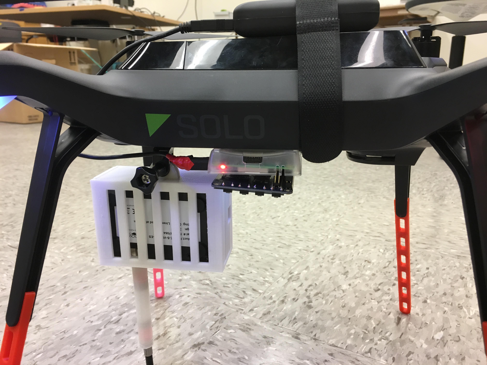
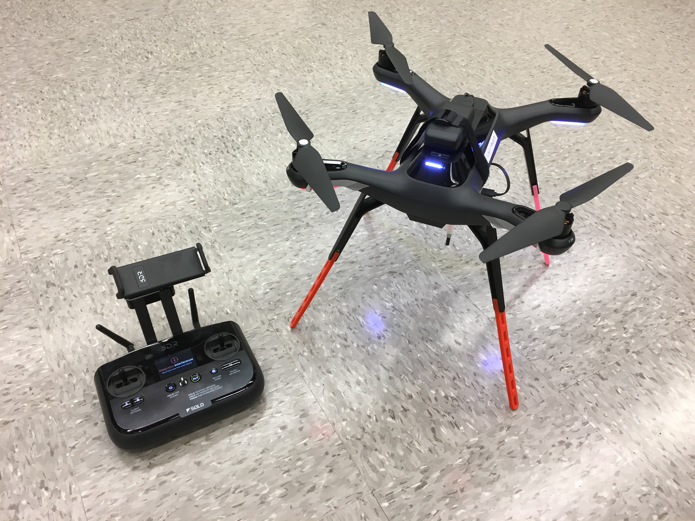
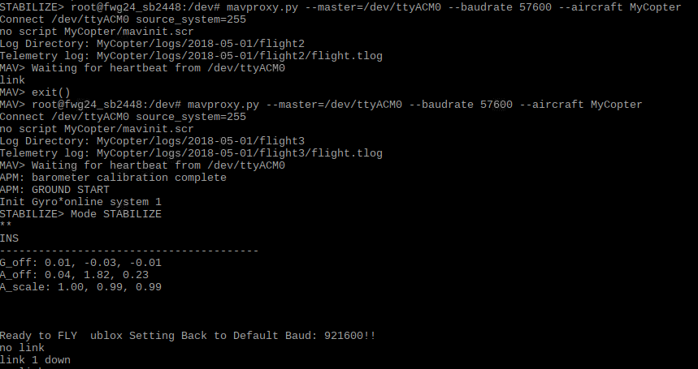
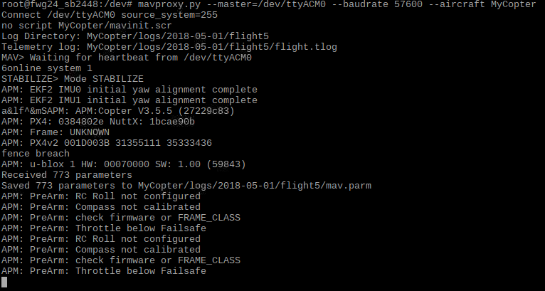
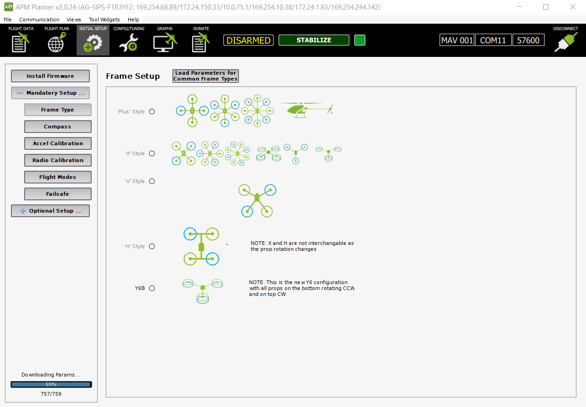
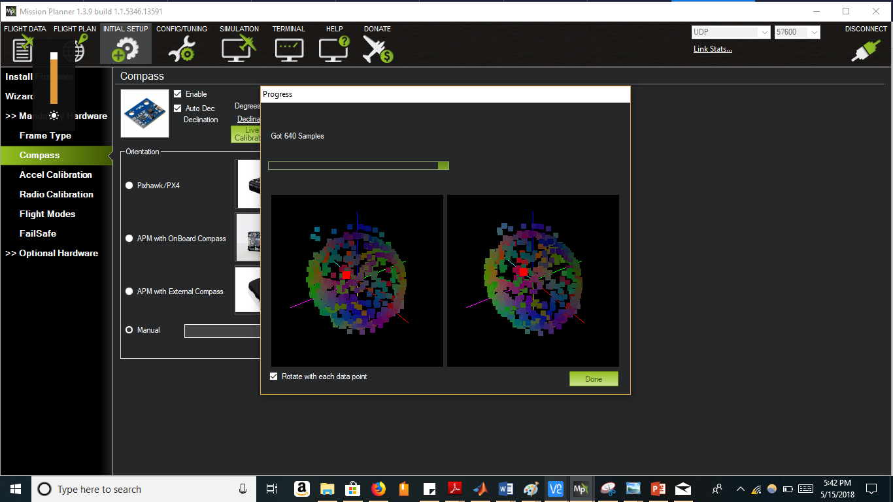
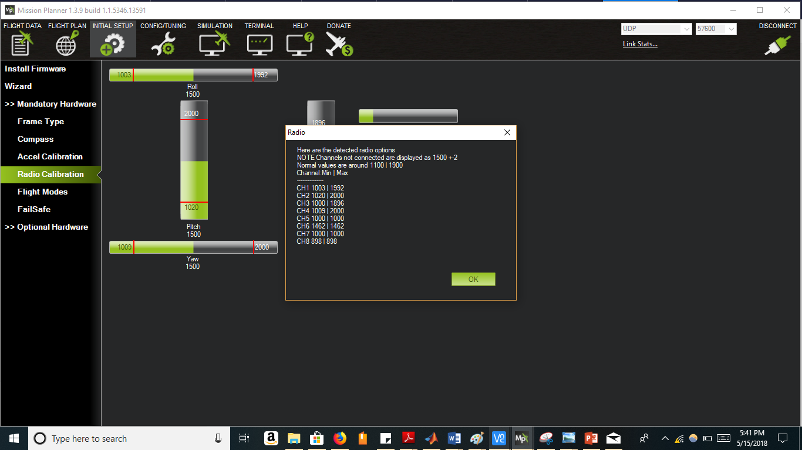
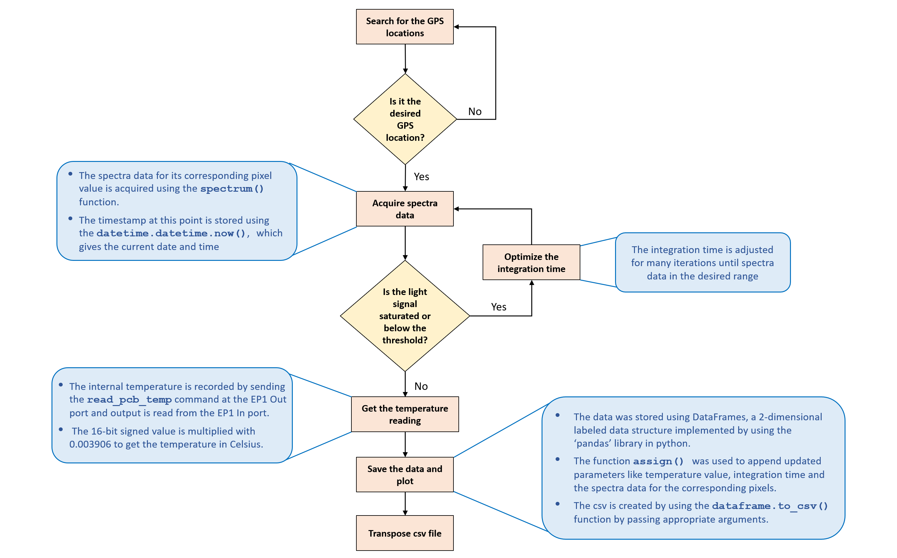

Corn Drone: Crop Spectral Monitoring System
Sun Lab
A Project By Christine Chang, Firehiwot Gurara, Rahul Desai and Shinjini Biswas
Demonstration Video
Introduction
Quick and reliable detection of plant performance is one extremely crucial tool for agriculturists and researchers of plant sciences. In most cases this requires manual investigation of the crop by physically checking each plant making the process long, cumbersome and prone to human error. This is especially difficult when tall crops like corn are grown in large fields. Optimization of this process would allow farmers to be more aware of the crop quality and be able to implement changes more promptly increasing economic yield and reducing wastage of resources. Researchers have found that when a particular plant is struggling it reflects wavelengths from across the spectrum which are different from their thriving counterparts. Dynamic monitoring of these differences will help obtain plant distress signals. By using a spectrometer coupled with a drone, communicating with the help of a raspberry Pi we present a method of aerial data collection for faster, accurate and large scale detection of plant distress and enhance plant monitoring.
Objectives
A general overview of how the drone would fly from the home base to different points in the corn field.
- Gathering hyperspectral data at predetermined points on a corn field with the help of an autonomous unmanned aerial vehicle (UAV).
- Set up robust communications between the UAV, the spectrometer and the RPi to enable flight over extended distances without delay or loss of network.
- Interfacing the spectrometer with the RPi to procure and plot crucial data of wavelength reflections from each crop region for detection of plant distress signals.
Hardware Design
The components used for this project are:
- Flame Spectrometer - This is an Ocean Optics product that is design to sustain thermal variance with minimal data error. This spectrometer combined with a fibre optic cable we can detect the reflected wavelengths from the corn fields at a specific location.
- 3DR Solo Pixhawk Drone - This is the UAV that we use for flying the payload comprising of the spectrometer, the Raspberry Pi and its power source to points on the field, arriving at which it will hover and allow the Flame Spectrometer to collect data before moving to a new location. This can be driven manually or by setting up a flight plan for autonomous drone movement.
- Raspberry Pi 3 - This is the center of communication flow and provides a place for storing the collected data. This contains the programs for procuring signals from the drone and signal the Flame Spectrometer to commence its data collection. The data is either stored in its own File System or to an external pen drive if it is attached.
- 3DR Handheld Drone Controller - This is the 3DR Solo Drone controller that is used to calibrate the drone for GPS and leveling. This can be used to manually fly the drone to any specific location, regain control of the drone from autonomous flight and also for broadcasting a local wifi hotspot.
The communication flow of the entire system.
Communication Setup
We used three different approaches to setup communication between the Pixhawk and the RPi. The Pixhawk is the flight controller hardware embedded in the drone that contains ARM processor, sensors, power system control, and communication interfaces such as serial ports, I2C, USB and SPI. The setup involves two steps.
1. Turn off serial console
Before we started the communication setup, we turned off the serial console in the RPI. The serial console allows us to connect between other computers and the RPi to access the linux console that displays system settings during boot. This is important to check and fix problems during boot or while logging onto the RPi. If this is not turned off it can interfere with the signal that is sent between the RPi and the drone. It is important to note that we only disabled the setting that allows the login shell to be accessible over serial; the serial hardware communication is not disabled.
The serial console can be turned off in two ways, either from the console or directly from the RPi desktop screen.
Using raspi-config:
- Type raspi-config in the console
- Go down to advanced options and hit enter
- Go down to Serial and hit enter
- You will be asked the first question below and select No to turn off serial console
- Select Yes for the second question that asks to enable serial hardware communication
From desktop:
- From the RPi desktop screen click on the RPi logo
- Click on Preferences
- Select Raspberry Pi configration from the dropdown menu
- Select disable button for Serial
2. Setup commuication
We used for different approaches to setup the communication. We switched from one to another due to challenges faced when using each method.
2.1 Tx/RX serial communication
Our first approach was to setup a serial communication between drone and RPi. Since the Pixhawk is inside the drone we used a breakout board to access the pins from outside.
The TX/RX pins of the RPi were connected to RX/TX pins of the breakout board respectively. This allows us to transmit data between the drone and the RPi. The baud rate ( the rate in which signals are signals are transmitted) the the communication on the RPi should be set to 57600 since the Pixhawk transmits signals at this rate. In addition, it is also important to ensure that there is a common ground between RPi and Pixhawk.
Once the hardware connections are setup correctly, the next step is to test if signals can be transmitted between the two devices. In order to connect them we used Mavproxy software. The baud rate is set to 57600. The teletypewriter (tty) is USB0. --master specifies which port (serial, USB or network address/port) the UAV is communicating on. --baudrate specifies the baud rate and finally --aircraft specified the directory in which the log files for the drone are created. The Mavproxy software is run as a root user; therefore sudo -s should be used to switch from pi user to root user.
sudo -s
mavproxy.py --master=/dev/ttyS0 --baudrate 57600 --aircraft MyCopter
However this step didn‘t work. In fact, we got a console message that the link between the two was OK
when the common ground pins were disconnected. Otherwise it displays Waiting for heartbeat
message. Heartbeat is a periodic signal that can be transmitted between devices. Typing link
on the console once Mavproxy is running can show whether or not the link is ok.
We are not fully certain as to why the common ground issue gives error. However, at some point, we took apart the entire drone noticed that even though the breakout board is connected directly, the ground pins indicated on the breakout board do not go to the Pixhawk. We alternated between different ground pins and tested the connection, but this didn‘t make a difference. Therefore, we switched to using another form of communication.
2.2 Universal serial port (USB) communication:
Instead of using the TX/RX pins on the breakout board and RPi, we connected connected a USB port to the RPi and the corresponding power, ground, Data+ (D+) and Data-(D-) pins on the breakout board. We tested the connection using a different tty. However, still the communication didn‘t work. There was also a common ground issue in this communication as well.
mavproxy.py --master=/dev/ttyUSB0 --baudrate 57600 --aircraft MyCopter
2.3 Direct connection with Pixhawk
At this point we decided to take apart the drone and access the pins directly. When we took it apart, we found out that there is a microsub pin. Therefore, we planned on setting up a direct micro usb-usb connection between the raspberry pi and the pixhawk.
Mavproxy output for direct connection between drone and laptop using micro usb -usb cable.
Before doing that we installed another ground control station (GCS) software that other people normally use on their laptops to connect with the drone. We installed Mission Planner and APM Planner 2.0 softwares. Both have similar configurations and for later steps during the project we mostly used Mission Planner.This software enables us to directly connect the drone with our laptop using a COM (communication) port through USB. We were able to successfully connect the drone and RPi using this method.
At this point we found out that we had to do software updates and calibrations for the drone before even checking the communication since the drone won‘t be able to fly unless clibrations are done properly. Therefore, we took a step back and worked on updating the built-in software in the drone. However, in order test the communication only updates were necessary.
Once the software is updated , we were also able to connect between the RPi and the drone using the same microsub-usb configuration.
Mavproxy output for direct connection between drone and RPi using micro usb -usb cable.
We thought this step would be our final connection method with the drone. However, we found out that this communication only works as long as the drone is turned off since the Pixhawk can be powered from the RPi. This could be a result of the drone preventing double powering of the controller(Pixhawk). One way to avoid this could be stripping the wire that has micro usb and usb ports on either ends and cutting the power line. After trying the next wifi based method, we also found out that if the drone is powered before the RPi is connected with the Pixhawk using this method, the communication works well. The next method is another alternative that we thought would work well for short range distance flight after testing the drone in the field.
2.4 Sololink wifi
The way we connected with the drone from our laptop during field test was by using the wifi broadcasted from the controller. The drone controller broadcasts both radio and wifi signals that can allow it to control the drone over long and short distances respectively. In order to do this we used a universal datagram protocal (UDP) based connection from mission planner. After having done the field test and encountering the double powering issue of the micro usb usb connection, we decided to test similar form of connection from the RPi using Mavproxy since it is also a GCS software. Its major difference from Mission Planner is that it is console based.
In order to do this we first connected the RPi wifi to the wifi broadcasted from the controller (Sololink) and then accessed the wlan address by typing ifconfig command from the console. We added this network address in the master command as shown below.
mavproxy.py --master=udp:10.1.1.152:14550 --baudrate 57600 --aircraft MyCopter
The universal datagram protocol (UDP) is a communication protocol that transfers short data packets called datagrams. This communication worked well for our test. The UDP address needs to be modified depending on the wlan address. However, since the RPi will be flying with the drone, the RPi could lose communication with the controller if the flight distance gets larger. Thus, it won't be able to control and communicate with the drone. The drone is able to communicate with the controller over longer distances since it can use radio communication if the wifi signal is not strong enough. Therefore, it may be necessary to switch to the direct micro-usb - usb connection for the actual implementation of the project in the corn field.
We also tested this communication using Dronekit software which also worked when we used connect command with the right udp (wlan) address.
# Connect to the Vehicle (in this case a UDP endpoint)
vehicle = connect('10.1.1.152:14550', wait_ready=True)
Software Setup
We used three different softwares. Three of them contain different interfaces that can be used for controlling the drone.
1. Mavproxy
Mavproxy is a ground control station (GCS) application for drones and other unmanned aerial vehicles (UAVs). It mainly uses command-line interface unlike other graphic based mission control softwares. Pymavlink allows us to use visual tools for realtime and offline data analysis and plotting.
In order to download the mavproxy package we followed the following steps:
sudo apt-get update #Update the list of packages in the software center
Some of the applications below were already installed so we chose the ones that aren‘t installed. We checked installed applications by using the whereis command to see if they exist in any of the folders on the RPi.
sudo apt-get install screen python-wxgtk2.8 python-matplotlib python-opencv python-pip python-numpy python-dev libxml2-dev libxslt-dev
sudo pip install future
The future application allows for easy interfacing between raspberry pi 2 and 3. It allows to convert a python2 or 3 code to a code that is compatible with both. We may not necessarily use this application, but we downloaded it incase if it is necessary at some point during the project.
sudo pip install pymavlink
sudo pip install mavproxy
2. Mission Planner
The mission planner software was installed after we encountered communication issues using the Mavproxy software. This mission planner has features that enabled us to have a better understanding of the calibration system for the drone, simulate drone motion, create a mission for drone flight and locate where the drone is using the GPS and compass sensors in the drone.
There are initial setups that need to be done before the flying the drone using this software. On of the first steps is updating the firmware in the drone and controller. We used a manual download and update of the firmware in the drone, but it is also possible to do it from the solo link mobile app.
3. Dronekit
Drone kit is another python based ground control station software. This software allowed us to write python code to control drone motion and integrate it with the RPi. To install drone kit software we followed these three steps:
sudo apt-get install python-pip python-dev python-numpy python-opencv python-serial python-pyparsing python-wxgtk2.8 libxml2-dev libxslt-dev
sudo pip install droneapi
echo "module load droneapi.module.api" >> ~/.mavinit.scr
If the applications are already installed, step 1 is not necessary.
Calibration
The sensors in the drone need to be calibrated properly before flight. The three major calibrations that need to be done for the drone are level calibration, radio calibration and compass calibration.
Different calibrations that need to be done before flying drone.
Level calibration
The level calibration must be done from a level surface; otherwise it gives error. The mobile app gives prompt that tells us in which direction to place the drone on the floor. The front side of the drone should be facing exactly the same direction in which the calibrating person is facing. This calibration is important so that the drone sensors can know which way is front, back, left,right, up and down.
Compass calibration
The compass calibration is done from the mission planner because it gives a better graphical view of the number of samples taken in order to identify the compass directions. The average number of samples we took is around 800 but less number of samples could work too. After the calibration, it is good to check whether the mission planner app actually faces north when the drone faces the north direction.
Samples collected for compass calibration.
Radio calibration
It is necessary for the controller. It is mainly used to set the maximum and minimum range of motion of the sticks on the controller. The drone has four channels for controlling yaw, throttle, pitch and roll. Throttle controls the vertical up and down motion. Yaw is the left and right rotation of the drone. Pitch is forward and backward motion. Roll is left right motion of the drone. The calibration was mainly done by moving the sticks to their extreme positions. This was also done on mission planner.
Radio calibration for different channels on controller.
Channel 1: low = roll left, high = roll right.
Channel 2: low = pitch forward, high=pitch back.
Channel 3: low = throttle down (off), high = throttle up.
Channel 4: low = yaw left, high = yaw right.
Software Design
RPi-flame spectrometer interface
The payload on the drone consists of a flame
spectrometer which gets activated whenever the drone hovers above a specific location. Spectrometers are used to measure the intensity of light with respect to its electromagnetic spectrum, typically wavelength or frequency. The light reflected off the corn crop was to be analyzed using the spectra data collected from the spectrometer to study the plants growth patterns.
The spectrometer starts procuring the spectra data for that particular GPS coordinate and stores it in a csv file. The script when activated acquires the spectra data, optimizes the parameters received and then plots a light intensity plot consisting all the pixel values corresponding to the timestamp they were recorded.
A flow chart of the entire system.
Challenges faced
During the temperature data acquisition, there was an a need to switch from the seabreeze library to the pyusb and again switch back to seabreeze to reiterate and calculate the optimized integration time values. Resolving this problem took a lot of time, as care had to be taken so that the functions used to close the libraries and start them again did not affect the resources used.
During the integration between the seabreeze code and the pyusb temperature code, it was decided to develop a separate script for the temperature procurement because there was a need to reinitialize the spectrometer before passing the respective usb command to it. A separate script to initialize the spectrometer, get the temperature data from the flame spectrometer and release the resources isolated the scripts thereby making it easier to debug the code. This script was imported to the seabreeze spectrometer script and called as a function.
Drone-RPi interface
A python code that uses dronekit commands was used to control the motion of the drone. In this code we first connect the drone and the RPi and check initial configurations such as location and battery status. Doing this allows the user to check system settings before creating mission and flying the drone.
The missions are created in the form of list that sets waypoints using “Command “command. These waypoint lists are later added into one big list and uploaded on the drone. Each way point list is used to configure a command such us takeoff or return to launch, create a condition delay or no delay and set latitude, longitude and altitude. The drone mode must be set to auto in order to use the waypoints for setting up the drone motion.
In the hello_drone_guided.py code we manually set three gps points since waypoints can be used when the drone is flying. In our demo and initial test, we didnlsquo;t fly the drone. Therefore, we measured the gps latitude and longitude values for preset locations. We used three points for the measurement.
Integrated software
The integrated software is designed so that it imports the flame controller code and calls the measure function in the flame controller code to start measuring. The measure function is called whenever the drone is within the radius of the GPS point. The GPS point is set by using the latitude and longitude values at that point. If the drone is outside this radius range then there will be no measurement.
For the initial test the drone is given preset way point: home, A and B for this case. During the actual test, a mission will be created with preset longitude and latitude values. These points will be randomized so that the drone moves between different way points in different patterns.
Integration
Testing of the system was done in phases and can be differentiated into manual control and autonomous control. Before we test we encapsulate the entire system together to create the final integrated Drone-Pi-Spectrometer system. This was done by connecting the Flame to the Raspberry Pi with a USB connector and strapping the entire module onto the drone. The drone is calibrated with the help of the 3DR Handheld Controller. The Pi was booted up and signed into using a keyboard which was later unplugged. The wifi Dongle is also added onto it incase we wish to change the wifi network for debugging.
Control test
Our first test was simply starting the drone using the hand held controller and navigating randomly by using the sticks on the controller. This was a control test to make sure that the drone worked without error when guided using the manual throttle joysticks on the hand held controller. This provides a fallback option if autonomous controls fail or some controls malfunction where we can gain manual control and drive the drone and its expensive payload to safety avoiding a crash.
Communication test
Next we checked the communication of the Raspberry Pi to the Drone and the Flame Spectrometer to the Raspberry Pi. We wish to see that each program worked without any error on the field before incorporating the integrated version of the codes.
The spectrometer code was run as a stand-alone program after connecting the Flame Spectrometer with the optic cable to the Raspberry Pi. This started the data collection as desired and stored it as a file in the attached USB drive.
Next we ran the drone code to ensure that it detects the GPS and returned the latitude and longitude of its position. We next employed a more elaborate version of this program where we fixed 2 GPS locations on the field. We then guided the drone (either by flying manually or by walking the device) to the respective location to see if the drone recognises the points and signals that it has successfully reached each point. This provided quite a few challenges. One hurdle was that the weather and nearby buildings caused the GPS locations obtained from the satellite to drift with time making our testing unreliable. However once we moved our testing to a more open area we saw lesser shifting of the GPS and could proceed further. Secondly we had to define a radius around each position so that when we are manually guiding the drone we do not waste time and resources in finding the GPS points.
Integrated communication test
We proceed forward by testing the integrated code that incorporates the spectrometer data acquisition program into our main drone program. This was designed such that whenever the drone successfully recognises a predefined point it will call the spectrometer code to start its data collection. We tested this while manually guiding the drone to each point and checking if the spectrometer code ran once the location was detected by the drone. We had to ensure that we run the spectrometer code only once for each position. This was achieved in the code design with the help of flags. Next we had to ensure that the main drone code did not interrupt the spectrometer code while it was taking the data. For this we has to reorganise the spectrometer code to run as a function which is called when a point is reached. The main challenge for this was that the spectrometer code ran only for the first point and not for the rest. This was resolved by editing the spectrometer code to return counter variables to their initial value after completion of the program. This is shown in the following video:
Autonomous flight test
Finally we test if we can fly the drone autonomously by designing a flight plan to desired points. For this we have to set a few GPS coordinates for the drone to reach. These points are called waypoints (WPs). We can easily specify these in the Mission Planner Software The only problem here was that we could not get the satellite map imaging of the field. Thus in order to fix the coordinates that corresponded to home as the launch position we used our phone GPS to verify and also run the drone code. We added 2 WPs and configured the plan to return to launch position after finishing the plan. This file was saved, loaded and written onto the drone. Then when the drone is armed and allowed to begin action it flies to the desired locations and returns to the launch site. The landing is preset with the drone where it hovers over the launch position and slowly descends vertically until it reaches the ground.
Next we wanted to test if we can gain back manual control while the drone was already in an autonomous flight plan. So we ran the mission again but before the drone could complete the route we started controlling it with the hand held controller. This worked but once it was under manual control it was not possible to get it to return to autonomous mode and complete its route.
Finally we wanted to test if we can make the drone hover at the desired waypoints. This was done by setting up delays at each waypoint. This worked successfully at all points. We also decreased the speed of the drone to fly slower to each position. This autonomous flight is shown in the following video.
Future Work
In this project, we were able to successfully communicate between drone and RPi, integrate the code that measures the spectrometer data and sets up drone motion and finally use these in order to take measurements in a field. We also tested the autonomous and guided drone flight in the corn field using mission planner software. The flame code is also scalable to the QE Pro spectrometer.
Currently, we are using polling loop to take measurements. In the future, it is useful to use interrupts so that we don’t waste processor cycle. We are currently minimizing this by adding a delay of 1 second before each loop iteration. In addition, the drone motion should be tested by using waypoints and autonomous motion. Even though the PiTFT is placed on the bottom side, it could be useful to have a graphical interface that can allow the user to start the drone motion directly by pressing a button from the RPi screen.
An app that can allow controlling motion of the drone will also be useful so that the drone motion can be controlled from a mobile phone. In addition, there is also a possibility that the drone controller can be configured so that there is a direct communication between the controller and the RPi instead of the drone and the RPi. This can help us to tackle the challenge of losing control of the RPi once the drone moves farther from its home point.
Setting up the drone so that the user can tell it when to take measurements after setting its motion until a certain point. This allows the user to have control over the drone motion and measurement in real time instead of presetting GPS points. In addition having a modular code that can allows the user to integrate other sensors or use camera for taking pictures of the field will be helpful. The final system set up should work form a bigger drone.
Work Distribution
Meet the Team

L-R: Christine, Shinjini, Rahul, Firehiwot
- Christine Chang, cyc54@cornell.edu: The brains behind the project.
- Shinjini Biswas, sb2448@cornell.edu: Integration of both interfacing programs and testing of the final system.
- Rahul Desai, rd542@cornell.edu: Implemented the Raspberry Pi - Flame spectrometer interfacing.
- Firehiwot Gurara, fwg24@cornell.edu: Incharge of system setup, and integration of the Raspberry Pi - Drone Interface.
Inspite of all of their individual specialities everyone contributed equally and had a lot of fun!!
References
Drone kit
Python Dronekit Guide
Connecting through dronekit
Dronekit API reference
Planning mission
Mavproxy mission editor
Planning mission using waypoints
Radio calibration
Radio calibration drone
Firmware setup
Installing firmware for Pixhawk
Python Seabreeze
Python seabreeze Github link
Breakout board
Breakout board order site
Code Appendix
Intial setup check code: hello_drone.pyIntegrated code: hello_drone_guided.py
Hello Drone code with waypoint setup: hello_drone_man.py
Flame code for temperuature measurement: temperature_control.py
Flame control code: flame_control.py